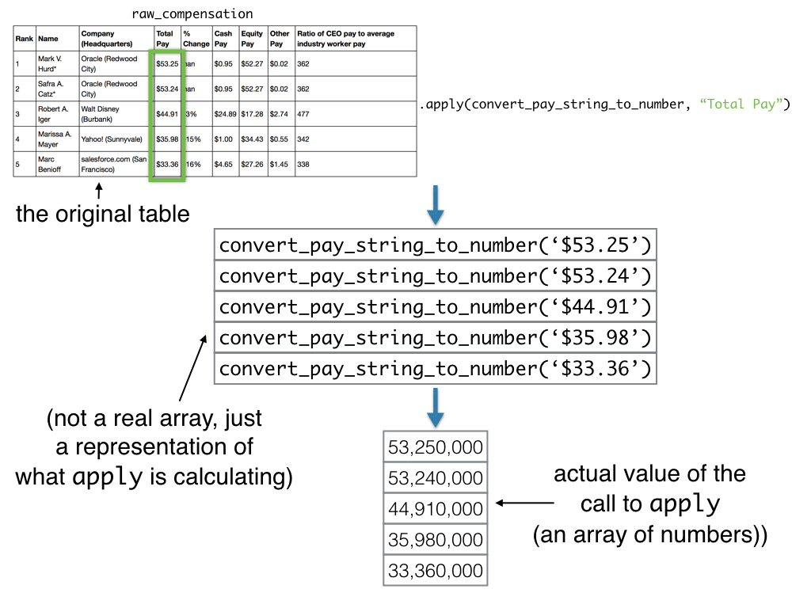

Writing your own functions, applying one across a whole column with apply, and drawing your first histogram.
This copy trades the class's datascience library for plain NumPy and pandas — the tools you'll actually keep using after this course. The exercises didn't change; only the syntax around them did.
| datascience | numpy / pandas | |
|---|---|---|
| Table.read_table(path) | → | pd.read_csv(path) |
| tbl.column('x') | → | tbl['x'].to_numpy() |
| make_array(...) | → | np.array([...]) |
| arr.item(i) | → | arr[i] |
| tbl.apply(fn, col) | → | df[col].apply(fn) |
| tbl.with_column(name, vals) | → | df[name] = vals (on a df.copy()) |
| tbl.hist(col) | → | df[col].hist() |
def to_double(x):
"""Doubles a number."""
return x * 2
to_double(21) # 42
to_percentage, which converts a proportion to a percentage, and use it to compute twenty_percent.to_percentage again on the given a_proportion to get a_percentage.print only displays a value; it doesn't hand it back to the caller.return statement evaluates to None, even if it printed something.def shout(word):
print(word.upper())
result = shout("hi") # prints HI
result # None -- shout never returned anything
num_non_vowels, which counts non-vowel characters, by calling the provided disemvowel function inside it.print_kth_top_movie_year(k), which prints a sentence about the year ranked k-th by total gross movie sales.type(x) tells you what kind of value you're holding.np.average on a column of strings raises a TypeError — that's the clue something needs converting.type(raw_compensation["Total Pay"].iloc[0]) # str -- even though it looks like a number!
total_pay_type to the type of the first value in the Total Pay column.Total Pay as mark_hurd_pay_string.s.strip(char) removes a character from the start or end of a string.float(s) turns a numeric-looking string into an actual number."$9".strip("$") # '9' float("9") * 1_000_000 # 9000000.0
mark_hurd_pay_string to a number of dollars (not millions of dollars).convert_pay_string_to_number(pay_string), using the argument instead of the specific string.some_functions = np.array([max, np.average, len]) some_functions[0](4, -2, 7) # 4
some_functions.df[col].apply(fn) calls fn once for every value in that column and collects the results.df.copy() makes a new table, so adding a column to it leaves the original untouched.
apply, build compensation: a copy of raw_compensation with an added Total Pay ($) column.np.average work on it directly.prices = pd.Series([9.99, 14.50, 3.25]) np.average(prices)
average_total_pay.cash_proportion: the fraction of each CEO's pay that was cash.df[df[col] != x]) drops rows, same as before — now combined with the columns you've converted.apply your own function again to parse a second string column.tbl2 = tbl[tbl["Notes"] != "(none)"] tbl2["Notes"].apply(parse_note)
with_previous_compensation: filter out CEOs with no previous year, then add a 2014 Total Pay ($) column.average_pay_2014, the average 2014 pay among those CEOs.df[col].hist() plots the distribution of a numeric column.len(...) lets you count rows above a threshold, to check the histogram against a number.compensation["Total Pay ($)"].hist()
compensation.